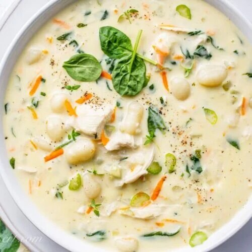

Creamy Chicken Gnocchi

Description
This delicious dish is the perfct cold-weather meal. It's warm, it's hearty, it's filling, and it's so tasty. Read below how to make it.
Ingredients
- Dried Gnocchi
- Chicken Breast
- Spinach
- Carrots, Onions, and Celery
- Chicken Broth
- Heavy Cream
Steps
- Dice the chicken, celery, carrots, and onion. Chop the Spinach.
- Cook the chicken so that it's slightly browned, then remove from heat.
- Put carrots, celery, and onion into large pot and cook with butter until the onions are transluscent and very aromatic.
- Add chicken broth and bring to a boil.
- Add gnocchi and let cook until nearly fully cooked (about 13 minutes)
- Add chicken and spinach, and let cook until the spinach is wilted and the chicken is fully cooked.
- Add heavy cream and stir.
- Serve hot!